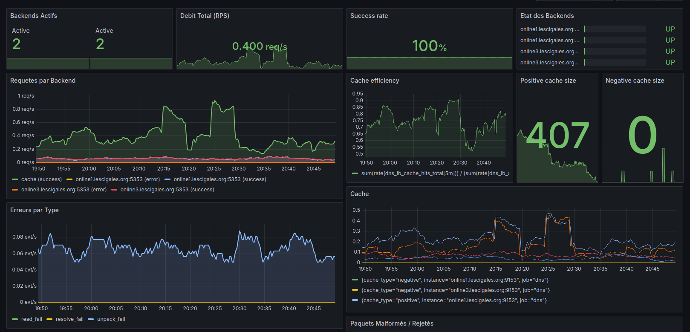

A high-performance DNS load balancer proxy written in Go, featuring intelligent caching, Prometheus metrics, and systemd hardening — all in an 8 MB static binary.
All the features of a professional DNS resolver, without the complexity.
Even traffic distribution across multiple DNS backends with automatic failover on failure.
Positive cache for NOERROR responses, negative cache for NXDOMAIN/SERVFAIL. Independently configurable TTLs.
Failure detection with tolerance (N consecutive failures) and degraded mode to prevent total lockouts.
Native exposure of 10+ metrics: P50/P90/P99 latency, RPS, backend status, cache hits/misses, errors by type.
ProtectSystem=strict, LogsDirectory, Restart=always, LimitNOFILE. Maximum isolation, zero attack surface.
Full support for both protocols, with TCP framing and pipelining handling for large payloads (AXFR).
Per-IP counting via internal hash table with on-demand JSON dump. Zero Prometheus cardinality explosion.
CGO_ENABLED=0 static binary. Single-file deployment, compatible with all Linux, containers, BSD.
Benchmarks run with 1000 concurrent workers on localhost.
Ready-to-use Grafana dashboard, importable in one click.

DNS request flow through the proxy.
DNS Client
│
▼
┌─────────────────────────────────────┐
│ DNS-LB Proxy │
│ │
│ 1. Parse request (miekg/dns) │
│ 2. Cache lookup (positive/negative)│
│ ├─ HIT → Immediate response │
│ └─ MISS → Select backend │
│ 3. Round-robin (thread-safe) │
│ 4. Forward UDP/TCP to backend │
│ 5. Update cache + metrics │
└─────────────────────────────────────┘
│ │
▼ ▼
Backend 1 Backend 2
(BIND/Unbound) (PowerDNS/CoreDNS)
From zero to production in 3 commands.
# 1. Build (static binary)
CGO_ENABLED=0 GOOS=linux GOARCH=amd64 \
go build -a -installsuffix cgo -o dns-lb dns-lb.go
# 2. Launch with cache and debug
DNS_BACKENDS=8.8.8.8:53,8.8.4.4:53 ./dns-lb -port 5353 \
-cache-positive -cache-positive-ttl 1h \
-cache-negative -cache-negative-ttl 60s \
-debug
# 3. Verify
dig @localhost -p5353 example.com +short
curl localhost:9100/metrics | grep dns_lb
📘 For complete systemd deployment (service, logrotate, firewall), check the documentation on GitHub.